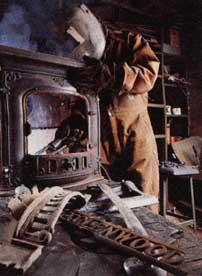
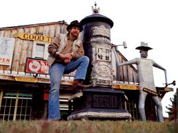
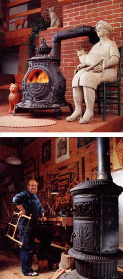
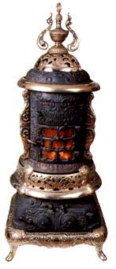
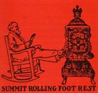
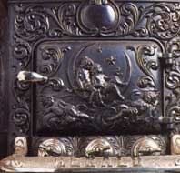

Issue # 115 - January/February 1989
Finding these old treasures is just the first step toward restoration.
IF THE FACADE OF THE GOOD TIME Stove Company in Goshen, Massachusetts, resembles a Wild West saloon, the inside and back yard remain pure Yankee-reflecting, as they do, compulsive smithery, unbridled ingenuity, an apparent grudge against the cold, and the native impulse to save everything. The yard is the resting place, probably not final, of defunct stoves, broken grates, rusted hinges and an old lawn mower. The workshop at the rear of the building is crammed with acetylene tanks, casting molds, grinders, sandblasting nozzles, virgin firebrick liners, two stripped cast-iron ranges awaiting rejuvenation, and exactly one blacksmith, a masked man at the moment welding a seam on a stove jacket. Off to the side, as well as upstairs, shelves sag with spare parts-legs, doors, vents, grillwork-most of them salvaged from stoves beyond repair, some of them fresh recasts, some collected from the leftover inventories of late, great American stove manufacturers.
However, as is the case in most New England homes, it is the front parlor that is the show room rather than the working center. It is also here, in the front, that 40-year-old proprietor Richard Richardson (a.k.a. Stove Black) displays his completely restored antique wood- and coal-burning stoves and ranges. To browse among them is to attend a rally of classic engines of warmth, all poised for fuel, ignition and radiance. Some are relatively recent, like the sleek, baked-enamel 1928 Kalamazoo cooking range destined for shipment to Mexico, where it will serve as a prop for a Hollywood film. Others, like the black Glendale brooding in the corner, represent the apex of cast-iron stove manufacture in America, a period culminating shortly after the turn of the century. Still others qualify as truly venerable, like the pair of late 18th-century Franklins or, the oldest of all, the 1790 Ten Plate that stands against the rear wall.
"Technically, they're just heating and cooking appliances," says Richardson. "And those you see here are now in tiptop shape, ready to be fired-to bake bread, heat rooms, put some soul in our houses again. But I ask you, look closely. Every one is also a time traveler, an artifact that tells you not only something of the history of metallurgy and of the technology of combustion, but also a bit about how we once lived and how households worked. Think, for example, of what it meant for a farm family to acquire a second, slightly smaller range for what used to be known as the summer kitchen, often located on the back porch. It made cooking- and life itself, I would venture, at least for the cook-far more bearable during the hot days of July and August.
"But there's another aspect," Richardson continues, excitement beginning to carry him. "Every stove is a work of functional art as well. A lost art, perhaps, but an art nonetheless. Marvels of engineering and design, in my opinion. In fact, 'Lost Stove Art' is how the Connecticut Valley Historical Society billed an exhibition of several of my stoves not long ago. I think they got the name right."
Lofty sentiments, perhaps, for a man who calls himself Stove Black, yet judging from the appearance of his floor models he is right. These were not mere instruments of utility, meant to labor out of sight in the basement. Rather they were showpieces, as ornate and busy in some cases as, say, Victorian sofas, or as simple and spare in others as, say, Shaker chairs. Whether through the curlicues in nickel trim, the shapes of brass finials or the figures and scenes molded from the stove iron itself, the old builders clearly catered to the tastes of their day.
"Well, they had to if they wanted to sell stoves," Richardson points out. "That's what the stove business was all about, obviously, and still is, as far as I'm concerned. This is how I make a living, you know. Even so, I can't stop admiring the skill, thought and creativity that went into making these stoves. I mean, they not only worked splendidly, they were beautiful, too. Still are, those that are left."
It was a pair of such beauties that launched Richardson on his restoration career 15 years ago. He discovered the twins by accident, identical Stewart Rounds rusting away in the cellar of a Berkshires hotel.
"I got them for little more than moving them out of there," he recalls. "They were the tall commercial stoves typically used in hotels, churches, depots, even steamboats. I went to work right away, naively with emery paper and a steel brush. By now my methods are considerably more sophisticated, I promise you."
These were much more than engines of warmth.
They were like family members.
So it would seem, for in the intervening years Richardson has had to acquire a variety of skills, not only in metal- and ironworking, but in industrial research and marketing as well.
"First I apprenticed myself to a local blacksmith, then to another one up the way. I learned to forge, shape and weld. Most important, I learned metal fabrication and how to work with cast iron, a material almost obsolete now, but which requires great finesse in technique. Iron is the name of the stove game, by and large. After that come the decorative elements: nickels, brasses, micas and so forth. The point is, faced with a cracked molding, a broken leg or a missing vent door, I've often had to make the replacement from scratch."
He's also had to plunge into some extraordinary research, tracking down long out-of-date sales manuals, catalogues and manufacturing specifications for various makes of stoves. Through these, as well as through the limited number of available semi-scholarly books devoted to the 19th-century stove industry, Richardson has turned himself into a learned historian of the art and science of heating.
Beyond bringing a stove back to near-perfect condition, however, the most rewarding part of his business, he admits, is fieldwork, that is, locating old stoves that he can buy and restore.
"At this point," he says, "I'm an expert at getting wind of an available stove, particularly here in New England, the heart of stove country. I'm also good at helping people scrounge through attics, cellars, garages and barns where a jewel just might be moldering away underneath a tarp in some nook or cranny."
Once a restorable stove or range is found, not only its pedigree but its individual history is discussed, followed by a struck bargain. Most of the time. "The finest old Garland I ever saw I couldn't buy," he recalls ruefully. "The farmer in whose barn I found it refused to sell. Not because of my offer, which was generous, but because his cat preferred to have her kittens in its oven. He didn't want to disturb her routine. Still doesn't, damn it all. What a stove."
At this stage, Richardson enjoys a national clientele, displaying his stoves not only on the show-room floor in Goshen but, more recently, on videodisc. Moreover, his very success has trained him in the most fundamental skill of all when it comes to commerce in old stoves: lifting very, very heavy things.
|
 by Walter Wick Stove Black as he's called, rests by a Stewart Round. Above, a Glendale undergoes restoration in the shop |
 Walter Wick An 1851 Bishop, with clever disappearing door, warms sculptress Nancy Dickenson's cats and seated figure in her house in Leeds, Massachusetts |
 Walter Wick Corn motif decorates Roy Superior's workshop stove, an 1896 Bennet. |
|
 Walter Wick The classic black cast-iron kitchen range, left, is the heart of Roy Superior's house in Williamsburg, Massachusetts. A 1902 Quaker range, it burns wood and coal. |
 Walter Wick |
 Walter Wick |